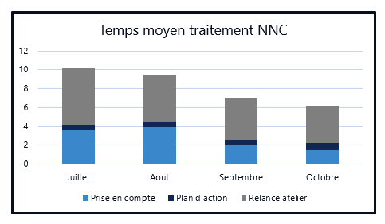
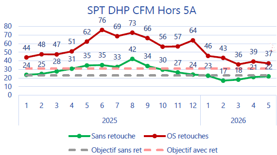

Introduce a graph
You want to explain what the audience is looking at.
Model
“This graph shows the evolution of our performance over the period.”
LESSON 03 · 75 MIN CORE + OPTIONAL RESERVE
Today you will connect technical aerospace English with the two real graphs you supplied. The goal is not to read every value: it is to explain what matters, why it matters and what should happen next.
Aujourd'hui, vous allez relier l'anglais technique aéronautique à vos deux vrais graphiques. L'objectif n'est pas de lire toutes les valeurs : il faut expliquer ce qui compte, pourquoi cela compte et quelle est la prochaine étape.
01 · RETRIEVAL
Answer orally first. Then reveal the model.
Répondez d'abord à l'oral. Affichez ensuite le modèle.
You want to explain what the audience is looking at.
“This graph shows the evolution of our performance over the period.”
A result improves after a difficult period.
“After a difficult period, the figures recovered and the overall trend improved.”
You do not want to read every number.
“The main takeaway is that performance is moving in the right direction, although one gap remains.”
02 · PROFESSIONAL VOCABULARY
Use the category filters. Click the audio button to hear the English. Company acronyms such as NNC, SPT, DHP, CFM and OS are kept exactly as supplied; do not invent an English expansion unless your company has an approved one.
Les acronymes internes restent inchangés tant que l'entreprise n'a pas validé une traduction officielle.
chambre de combustion
Produces high-energy hot gas before the turbine stages.
aubes directrices / distributeur
Stationary vanes that direct the gas flow towards the rotor blades.
aubes rotor
Rotating blades that extract energy from the hot gas flow.
en aval de
“The HPT is located downstream of the combustion chamber.”
en amont de
“The combustor is upstream of the high-pressure turbine.”
charge thermique
The heat-related stress experienced by a component.
flux / débit de refroidissement
Air used to help protect hot-section components.
durabilité
Ability to keep performing reliably over time.
prise en compte
The first stage when an item or issue is received and taken into account.
plan d'action
A defined set of actions to solve or control an issue.
relance atelier
A follow-up with the workshop or shop floor to obtain progress or action.
retouche / reprise
Additional work needed to bring an item back to the required condition.
temps de traitement
The time required to complete a process or resolve an item.
clôturer un point
Complete all required actions so the item can be formally closed.
histogramme empilé
Shows a total split into several components.
graphique en courbes
Shows how one or more series change over time.
ligne d'objectif
A reference line showing the objective or expected level.
écart par rapport à l'objectif
The difference between the actual result and the target.
fluctuer
Move up and down rather than follow a steady direction.
atteindre un pic à
Reach the highest value in the period.
atteindre un point bas à
Reach the lowest point before stabilising or recovering.
être conforme / aligné avec
Be at approximately the same level as the target.
le message essentiel
The one message the audience should remember.
le principal facteur
The factor that explains most of the change.
notre prochaine priorité est…
A clear way to move from analysis to action.
03 · TECHNICAL EXPLANATION
Use only the level of technical detail that is accurate and appropriate for the real programme.
Utilisez uniquement le niveau de détail technique approprié et exact pour le programme réel.
USEFUL STRUCTURE
Location: “It is located downstream of…”
Function: “Its main function is to…” / “It guides…” / “It extracts…”
Importance: “This matters because…” / “It has a direct impact on…”
“The high-pressure turbine is located downstream of the combustion chamber. Stationary nozzle guide vanes direct the hot gas towards the rotor blades. The rotor then extracts energy from the flow. This area operates under very high thermal and mechanical loads, so cooling, material capability and durability are important for reliable performance.”
1. Where is the high-pressure turbine?
2. What do nozzle guide vanes do?
3. Why does durability matter?
04 · SPEAKING BUILDER
Target: 45 seconds. Explain where the component is, what it does and why it matters.
Objectif : 45 secondes. Expliquez où se trouve le composant, ce qu'il fait et pourquoi il est important.
“The high-pressure turbine is after the combustion chamber. The nozzle guide vanes are stationary and they guide the hot gas to the rotor blades. The rotor blades turn and extract energy. The temperature is very high, so cooling and durability are important.”
“The high-pressure turbine is located downstream of the combustion chamber. First, stationary nozzle guide vanes direct the hot gas flow towards the rotor blades. The rotor blades then extract energy from the flow. Because this part of the engine operates at very high temperature, cooling, material capability and durability are essential for reliable performance.”
“The high-pressure turbine sits directly downstream of the combustor. The nozzle guide vanes condition and direct the hot gas before it reaches the rotating blades, which extract energy from the flow and transmit it through the shaft system. Because the hot section is exposed to severe thermal and mechanical loads, component cooling, material capability and durability have a direct impact on performance and reliability.”
05 · GRAPH LANGUAGE
The four most useful patterns today are: from … to …, by …, at … and compared with ….
Starting value → final value
Size of the change
Value at a point
Actual result vs objective
1. The value fell ___ 76 ___ 37.
2. The result decreased ___ 39 points.
3. The series peaked ___ 76 in June.
4. Which sentence is strongest in a meeting?
06 · REAL DATA CHALLENGE 1
This is a stacked bar chart. The goal is to explain the total trend and identify the component that contributes most.
Il s'agit d'un histogramme empilé. Expliquez la tendance globale et la composante qui contribue le plus au total.

1. What is the overall trend from July to October?
2. Which component is the largest part of the total throughout the period?
3. What happens to “Prise en compte” after August?
4. Which takeaway is most professional?
75-SECOND MISSION
Use: chart type → overall trend → 2 pieces of evidence → main driver → takeaway.
“This stacked bar chart shows the average NNC processing time from July to October. Overall, we can see a clear downward trend. Total processing time fell from around ten in July to just over six in October. Workshop follow-up represents the largest part of the total, although this component also decreased over the period. Initial handling time fell considerably after August, while the action-plan stage remained relatively small. The main takeaway is that overall processing time has improved significantly, but workshop follow-up is still the main contributor.”
“This stacked bar chart breaks down average NNC processing time into three stages between July and October. The overall trend is clearly positive from a performance perspective: total processing time falls from roughly ten to a little over six. The largest contributor throughout is workshop follow-up. Initial handling also drops sharply after August, whereas the action-plan element remains comparatively small. So the key message is that the process is becoming faster overall, but further gains are likely to depend on reducing the workshop follow-up portion.”
07 · REAL DATA CHALLENGE 2
This is a multi-series line graph. Your job is to compare actual results with target lines, identify peaks and lows, and explain whether the gap is widening or narrowing.
Comparez les résultats réels aux objectifs, identifiez les pics et les points bas, puis expliquez si l'écart se creuse ou se réduit.

1. When does the OS rework series reach its highest value?
2. What happens to OS rework after the peak, overall?
3. Where does the “without rework” series bottom out?
4. By May 2026, what is true about the “without rework” series?
5. Which sentence best describes the red series from June 2025 to May 2026?
90-SECOND MISSION
Structure: what the graph shows → red series → green series → target comparison → takeaway.
“This line graph compares the results with and without rework against their respective targets from January 2025 to May 2026. Looking first at OS rework, the figure increased strongly during the first half of 2025 and peaked at 76 in June. After that, the overall trend was downward, although there were several fluctuations. By May 2026, the figure had fallen to 37. The result is still above target, but the gap has narrowed considerably. For the series without rework, the value peaked at 42 in August 2025 and then dropped to a low of 17 in February 2026. It recovered gradually to 22 in May, which is approximately in line with the grey target. The key point is that both indicators have moved much closer to their objectives.”
“This chart tracks two actual series against their target lines over seventeen months. The OS rework series deteriorated sharply in the first half of 2025, reaching a high of 76 in June. Since that peak, however, the underlying direction has improved. Despite temporary rebounds, the value fell to 37 by May 2026, so the gap to target is significantly smaller than it was at the peak. The ‘without rework’ series followed a different pattern: it peaked at 42 in August 2025, then improved sharply and reached a low of 17 in February 2026. It has since recovered slightly to 22, which is broadly aligned with the current target. Overall, the data suggests substantial improvement, while the OS rework series still requires attention.”
08 · EXECUTIVE SUMMARY
Your audience does not need every data point. Select the evidence that supports the decision.
Overall processing time has fallen. Workshop follow-up remains the largest contributor.
Both actual series have moved closer to their objectives. OS rework remains above target.
Progress is visible; the next priority is to protect the gains and close the remaining gap.
“Let me give you a quick overview of the two indicators. First, the NNC chart shows a clear reduction in average processing time between July and October, from around ten to just over six. This is a positive result. The main contributor is still workshop follow-up, so that is where we may have the greatest opportunity for further improvement. The second graph shows our SPT / DHP / CFM indicators against target. OS rework reached a high of 76 in June 2025, but the overall trend since then has been downward and the gap to target has narrowed considerably. The series without rework also improved strongly and is now approximately in line with its target. So overall, the direction is positive. Our next priority should be to consolidate these improvements, understand the remaining drivers of rework and maintain the progress on processing time.”
09 · OCTOBER MILESTONE
This model is deliberately modular. Thomas should learn the structure and cue words, not memorise every sentence.
Le modèle est volontairement modulaire. L'objectif est de mémoriser la structure et les mots-clés, pas chaque phrase.
Greet the audience and state the goal.
Explain the component / system simply.
Present the two graphs and the main trends.
Explain what the data means operationally.
Give priorities, ask for alignment, finish clearly.
Opening · 0:00–0:40
“Good morning everyone, and thank you for joining. Before we go into the detail, I’d like to give you a short overview of where we are, what the latest indicators are telling us, and the main priorities I see for the next phase. I’ll start with a quick technical reminder, then I’ll focus on two performance graphs, and I’ll finish with the actions I believe are most important.”
Technical context · 0:40–1:30
“From a technical point of view, the area we are discussing is in the hot section of the engine. The high-pressure turbine is located downstream of the combustion chamber. Stationary nozzle guide vanes direct the hot gas towards the rotating blades, and the rotor blades extract energy from that flow. Because these components operate under demanding thermal and mechanical conditions, cooling, material capability and durability are essential. This technical context is important because process performance and product performance are closely linked: delays, rework or repeated follow-up can affect our ability to secure the expected result efficiently.”
Graph 1 · 1:30–2:20
“Let me start with the average NNC processing time. This stacked bar chart shows the evolution from July to October. The overall trend is clearly positive: total processing time falls from around ten to just over six. The largest contributor throughout the period is workshop follow-up. Initial handling also decreases significantly after August, while the action-plan element remains relatively small. So the main takeaway here is that the process is becoming faster, but workshop follow-up is still the main area where additional improvement may be possible.”
Graph 2 · 2:20–3:10
“The second graph compares two actual series with their respective targets from January 2025 to May 2026. The OS rework series increased sharply during the first half of 2025 and peaked at 76 in June. Since then, despite several fluctuations, the overall direction has been downward, and by May 2026 the value had fallen to 37. The gap to target has therefore narrowed considerably, although the actual result remains above target. The series without rework peaked at 42 in August 2025, then improved strongly and reached a low of 17 in February 2026. It has since recovered slightly to 22, which is approximately in line with the grey target.”
Meaning · 3:10–4:15
“Taken together, these two graphs show visible progress. We are processing items faster, and both SPT-related indicators have moved closer to their objectives. At the same time, the data also shows where we should keep our attention. On the NNC side, workshop follow-up still represents the largest share of the processing time. On the rework side, the OS series is improving but remains above target. For me, these are not simply two isolated numbers: they point to the areas where better coordination, quicker closure of actions and more robust follow-up could have the greatest impact.”
Next steps + close · 4:15–5:00
“So, looking ahead, I see three priorities. First, we should understand what is driving the remaining workshop follow-up time and remove avoidable delays. Second, we should continue reducing the OS rework gap while protecting the good performance of the ‘without rework’ series. Third, we need to keep the message simple and visible so that teams can see both the progress and the remaining gap. The overall direction is encouraging, but the objective is not only to improve temporarily; it is to make the improvement sustainable. That is the key point I wanted to share today. Thank you, and I’m happy to take your questions.”
10 · FOLLOW-UP QUESTIONS
Use: acknowledge → answer → evidence → next step.
“That’s a good question. The graph shows that workshop follow-up remains the largest component, but the chart itself does not explain the root cause. I would separate the data from the diagnosis: the next step is to identify which follow-up activities create the longest delays and whether they can be shortened or prevented.”
“Not completely. The OS rework result has improved considerably since the peak, but it is still above the target. The positive point is that the gap has narrowed. Our priority is to continue that downward trend without losing the progress already achieved.”
“My recommendation is to focus on the two remaining gaps: workshop follow-up time and OS rework. I would identify the main drivers, agree on one or two measurable actions, and review the trend regularly rather than waiting for the next major milestone.”
“At this stage, the trend is encouraging, but I would be careful about calling it fully sustainable. We need to see the improvement maintained over additional periods and confirm that the underlying causes have been addressed. The current data is a strong signal, not the end of the analysis.”
11 · QUALIOPI PROGRESS REPORT
Automatic exercise results and manual speaking observations are saved in this browser until you reset them.
Les résultats et observations sont conservés dans ce navigateur jusqu'à réinitialisation.
OPTIONAL · 15–20 MINUTES
Change one fact: “The October NNC total is not 6; it is 9.” Thomas must update his analysis immediately.
Ask: “What would you say if the target changed next month?” Thomas must distinguish data, target and interpretation.
Explain “nozzle guide vanes”, “rework” or “thermal load” without saying the target word.
Reduce the 5-minute kickoff to exactly one minute while keeping the takeaway and next step.
76 · 37 · 42 · 17 · 22 · approximately 10 · just over 6 · 39-point decrease.
Interrupt twice and ask for clarification. Thomas must recover with “What I mean is…” and “The key point is…”